Introduction: I live in Sweden just over 1 year and have tried to learn Swedish via one of the SFI schools and was not lucky in this. Now I follow private lessons but if you get easily confused by the big grammatical words like me you when you get passed the A level you get headache and might tend to lose motivation. Another thing that I had an issue is with is that most Swedish lessons seems to be mostly setup for Restaurants, Stores, Healthcare, sport, and less about the daily life. In the beginning I was very motivated, could remember a lot of things and felt confident. Then I started mixed B and C materials and started with big words like "Konjunktioner", "Interjektioner", "Depones" and exceptions just when you think you understand the rule it gets destroyed. I got confused and drawing a blank each time I try to start a small conversation in Swedish. And lessons go from beginner to advance and back. It often skips several steps ahead to go back again. If you are like me, than this is site will be good for you.
The idea of this website is try to Create a more common daily Swedish and less technical Swedish, and for me hit 2 birds at once. Learning Swedish and practice my Coding. I am more a person that needs the practical more than the the theoretical. So bear with me in creating this site and home if all goes well many can enjoy it.
Note:There where you see Test and TBC, this is the start of my layout and will be filled eventually with Swedish lessons.
Welcome and hope you will enjoy the lessons with me. / Välkommen och hoppas att du kommer att njuta av lektionerna med mig
Please note that this site is working in Internet Explorer, but it looks better in the other browsers. And on some mobile phones the play button might be a bit bigger. Just zoom slightly in and they line up againLearn the "Alphabet" in Swedish. You can hover over or click on the image to make it bigger.
| 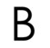 | 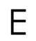 | 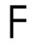 |
| 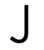 | 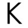 |
| 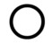 | 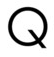 |
| 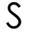 |
| 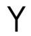 | 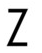 | |
|
| Eng | SWE | Eng | SWE |
|---|---|---|---|
| 0 - Zero | 0 - Noll | ||
| 1 - One | 1 - En/ett | 11 - Eleven | 11 - Elva |
| 2 - Two | 2 - Två | 12 - Twelve | 12 - Tolv |
| 3 - Three | 3 - Tre | 13 - Thirteen | 13 - Tretton |
| 4 - Four | 4 - Fyra | 14 - Fourteen | 14 - fjorton |
| 5 - Five | 5 - Fem | 15 - Fifteen | 15 - Femton |
| 6 - Six | 6 - Sex | 16 - Sixteen | 16 - Sexton |
| 7 - Seven | 7 - Sju | 17 - Seventeen | 17 - Sjutton |
| 8 - Eigh | 8 - Åtta | 18 - Eighteen | 18 - Årton |
| 9 - Nine | 9 - Nio | 19 - Nineteen | 19 - Nitton |
| 10 - Ten | 10 - Tio | 20 - Twenty | 20 - Tjugo |
Click on below to listen to "Counting" in Swedish.
Time to learn the "Time in Swedish" an hour is called "Timme" in Swedish. You can hover over or click on the image to make it bigger.
| 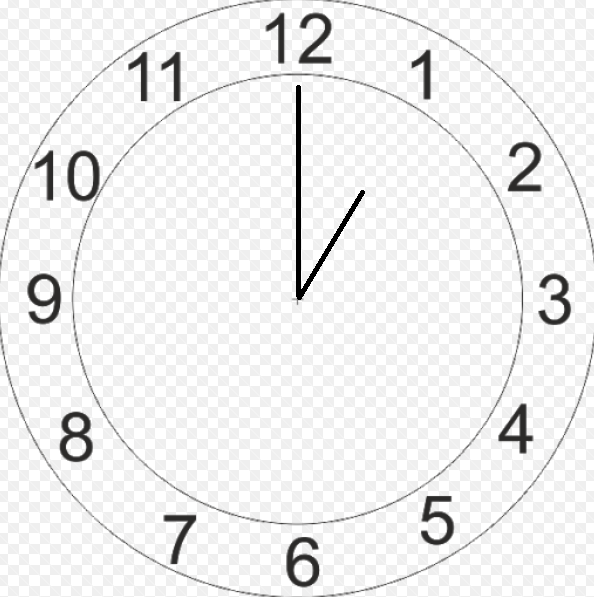 Klockan är ett |
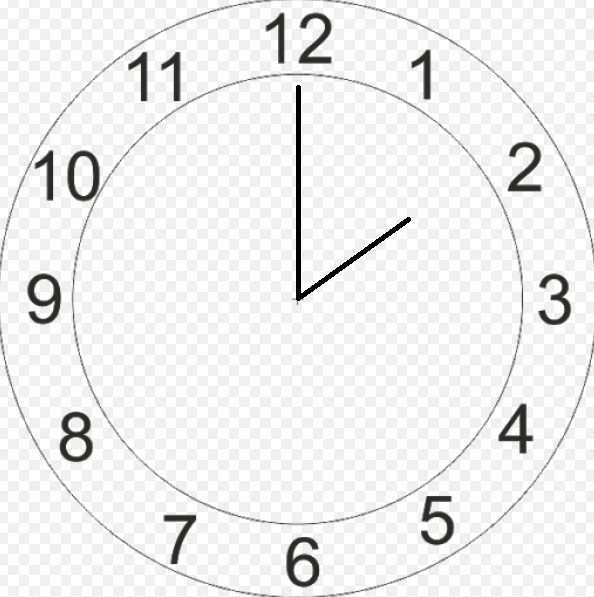 Klockan är två |
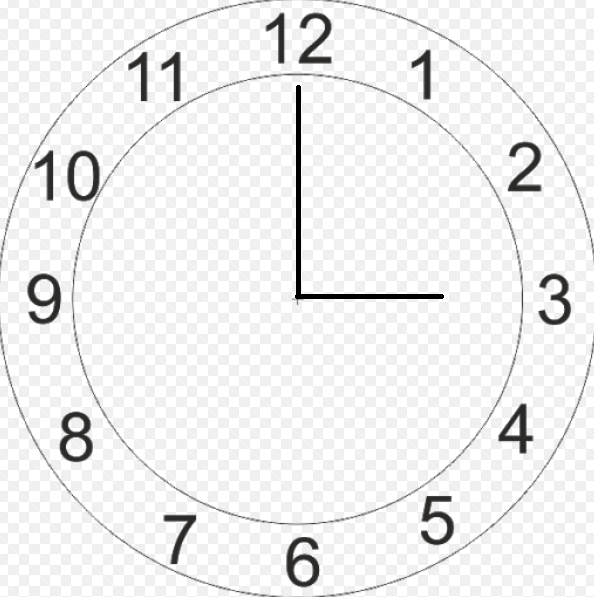 Klockan är tre |
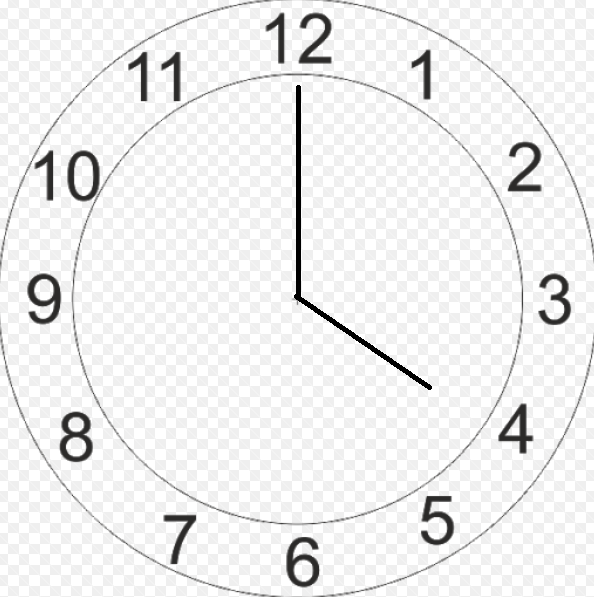 Klockan är fyra |
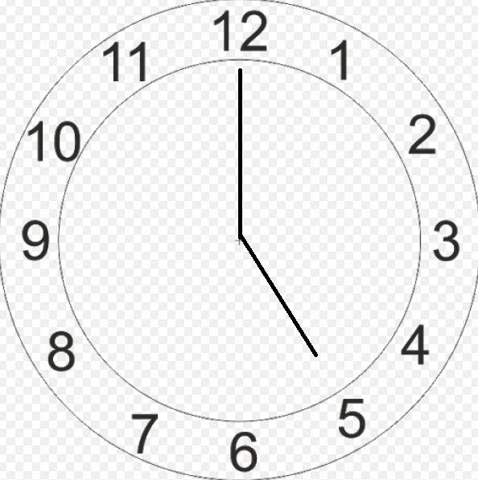 Klockan är fem |
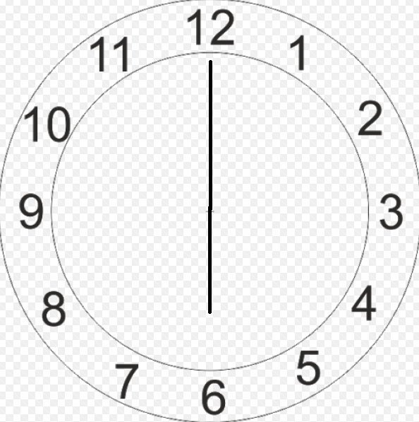 Klockan är sex |
| 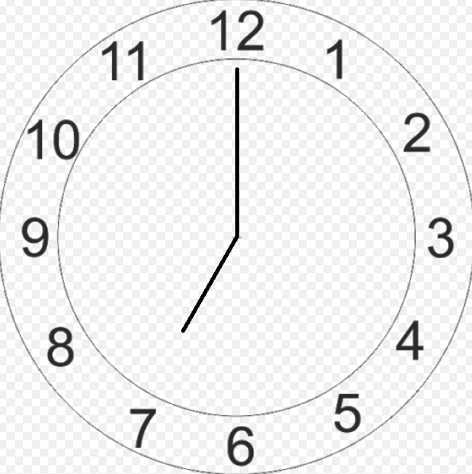 Klockan är sju |
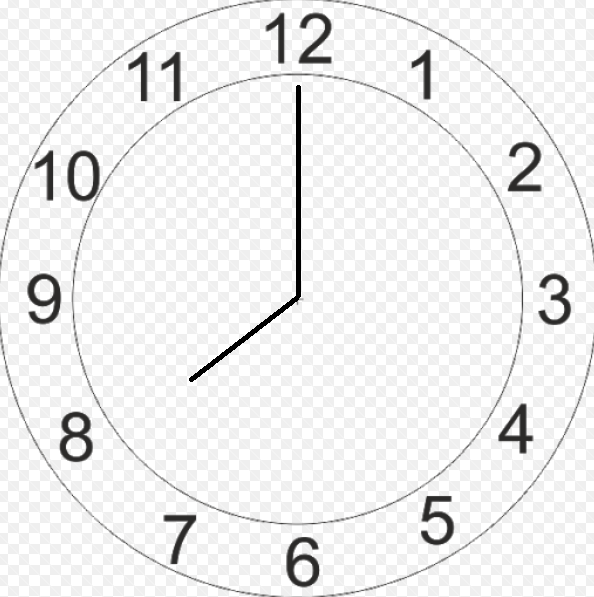 Klockan är åtta |
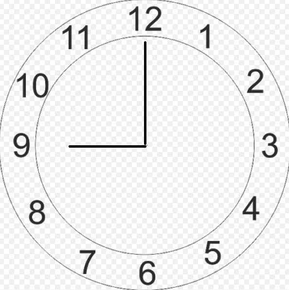 Klockan är nio |
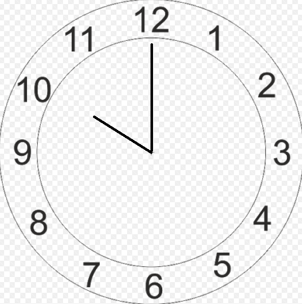 Klockan är tio |
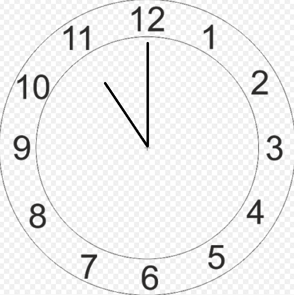 Klockan är elva |
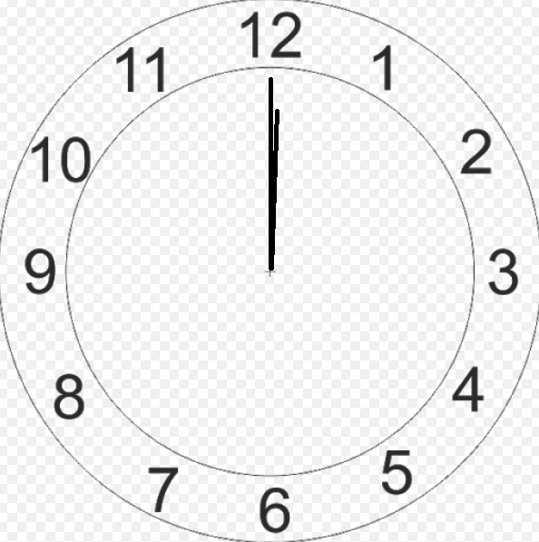 Klockan är tolv |
| 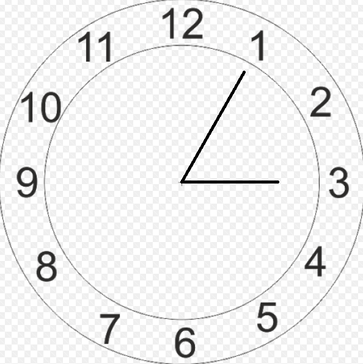 Klockan är fem över tre |
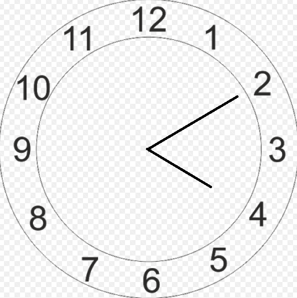 Klockan är tio över fyra |
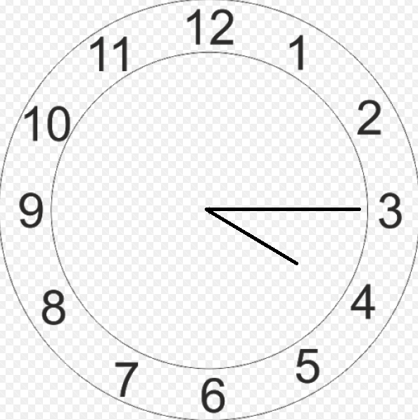 Klockan är kvart över fyra |
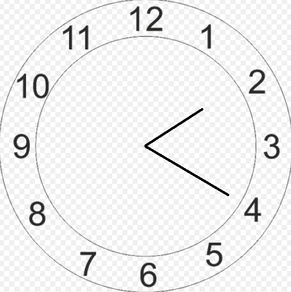 Klockan är tjugo över två |
 Klockan är fem i halv tre |
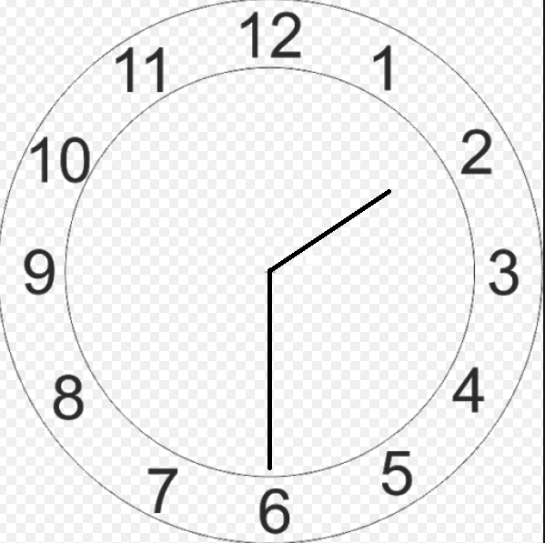 Klockan är halv två |
| 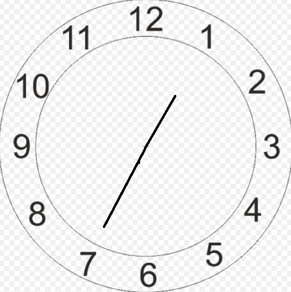 Klockan är fem över halv två |
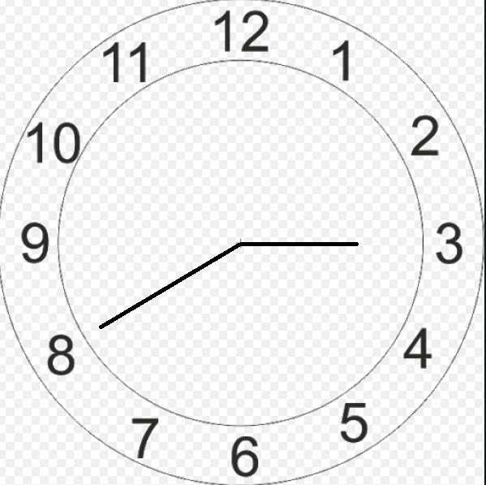 Klockan är tjugo i tre |
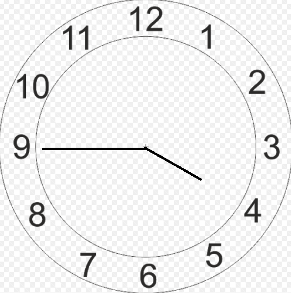 Klockan är kvart i fyra |
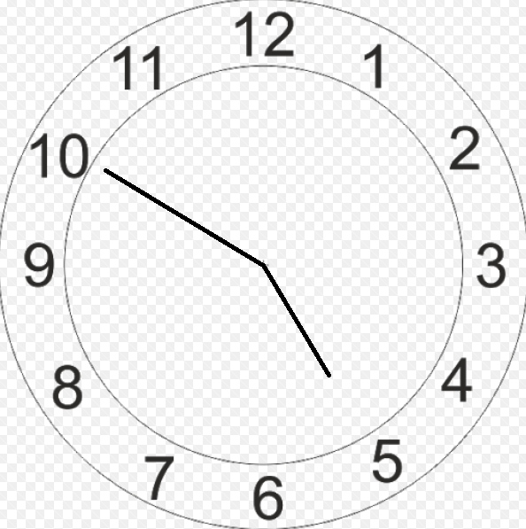 Klockan är tio i fem |
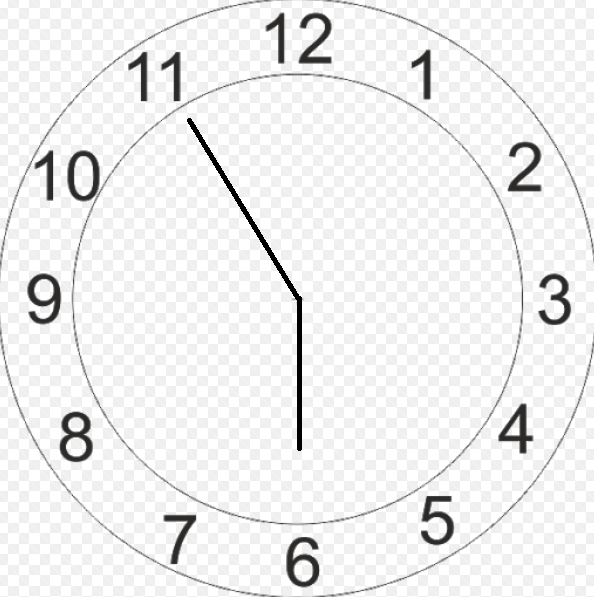 Klockan är fem i sex |
Names of days and months. A week in called "Veckor" in Swedish. You see that some months are the same in English. This is not a typo, in case you were wondering.
| Days | Dagar | Months | Månader |
|---|---|---|---|
| Monday | Måndag | January | Januari |
| Tuesday | Tisdag | February | Februari |
| Wednesday | Onsdag | March | Mars |
| Thursday | Torsdag | April | April |
| Friday | Fredag | May | Maj |
| Saturday | Lördag | June | Juni |
| Sunday | Söndag | July | Juli |
| August | Augusti | ||
| September | September | ||
| October | Oktober | ||
| November | November | ||
| December | December |
Click on below to listen to the "Days" in Swedish.
Click on below to listen to the "Months" in Swedish.
There are many ways to great someone like in other countries, but these are the most common ones
| Eng | Swe |
|---|---|
| Welcome | Välkommen |
| Hello | Hej |
| Good morning | God morgon |
| Good afternoon | God eftermiddag |
| Good evening | God kväll |
| Good night | God natt |
| Good bye | Hej då |
Click on below to listen to the "Greetings" in Swedish.
| Eng | You | Eng | ME |
|---|---|---|---|
| Hello | Hej | Hello | Hej |
| What is your name? | Vad heter du? | My name is Melanie. And you? | Jag heter Melanie, och du? |
| My name is patty, How are you? | Jag heter, Patty. Hur mår du? | I am ok, thank you. And you? | Jag, mår bra tack. Och du? |
| I am ok, thank you. | Bra, tack. | Where are you from? | Varifrån kommer du? |
| I am coming from Ireland, and you? | Jag kommer från Irland. Och du? | I am from Germany. | Jag kommer från Tyskland. |
| Nice to meet you. Good bye. | Trevligt att träffas. Hej då | Nice to meet you too. Good bye. | Det samma. Hej då. |
Congratulations, You now know how to say "Hi", "Good Bye" and ask how someone is, where are they coming from and ask for their name.
Click on below to listen to the "Conversation" in Swedish.